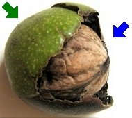

Ist die Walnuss wirklich eine Nuss?
  Die Früchte der Walnuss sind tatsächlich Nüsse und keine Steinfrüchte, wie es noch in vielen Büchern steht.
Die Früchte der Walnuss sind tatsächlich Nüsse und keine Steinfrüchte, wie es noch in vielen Büchern steht.
Die grüne Schale entspricht dem Becher einer Eichel oder der stacheligen Hülle um die Bucheckern.
Auf Englisch heißt die Walnuss Walnut.